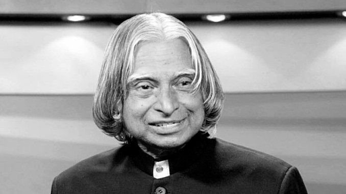

Dr. A.P.J Abdul Kalam
Missile Man of India

Dr. A.P.J Abdul With inspirational Leadership Quality
Here's a time-line of Dr. A.P.J Abdul Kalam life:
- 1931 - Born in Rameshwaram, Tamil Nadu Avul Pakir Jainulabdeen Abdul Kalam was born to Jainulabdeen, a boat owner, and homemaker Ashiamma. He went to Ramanathapuram Schwartz Matriculation School and worked from an early age to supplement the family income
- 1954 -Graduates in Physics Kalam graduates in physics from Saint Joseph's College, Tiruchirappalli. He moves to Madras to pursue further education after graduation.
- 1960-Joins DRDO as scientist Kalam completes his degree in Aeronautical Engineering from Madras Institute of Technology (MIT) and joins the Defense Research and Development Organization (DRDO) as scientist.
- 1969 -Moves to ISRO Kalam moves to the Indian Space Research Organisation (ISRO) where he helms India's first Satellite Launch Vehicle (SLV-III)
- 1980 -Lead's India's entry in the Space club Kalam leads India’s efforts to enter the space club by putting the Rohini satellite in Earth's orbit with the first indigenous SLV-III
- 1980 — 1990 -Develops Prithvi and Agni missiles As the chief of the Integrated Guided Missile Development Programme, he is credited with the development and operationalisation of Agni and Prithvi missiles.
- 1981 - Recieves the Padma Bhushan Kalam recieves the Padma Bhushan for his contribution to the field of science and technology. ISRO Kalam moves to the Indian Space Research Organisation (ISRO) where he helms India's first Satellite Launch Vehicle (SLV-III)
- Childhood & Early Life -Abdul Kalam was born as the youngest of five children of a Muslim boat owner named Jainulabudeen and his wife Ashiamma, in Rameswaram, Tamil Nadu. His ancestors had once been wealthy traders though his family lost much of its fortunes by the early 20th century. Kalam grew up in humble surroundings and had to take up a job while he was still in school in order to augment his familys meager incomehe distributed newspapers to help his father in providing for the family. He was a bright young boy, blessed with a thirst for knowledge and was always eager to learn new things. He completed his schooling from Ramanathapuram Schwartz Matriculation School and proceeded to study physics at the Saint Joseph's College, Tiruchirappalli, from where he graduated in 1954. Then he studied aerospace engineering in Madras Institute of Technology, graduating in 1960. His childhood ambition was to become a fighter pilot but he narrowly missed achieving his dream.
- Career at DRDO -After completing his studies he joined the Aeronautical Development Establishment of the Defence Research and Development Organisation (DRDO) as a scientist. One of the first projects he worked on was to design a small helicopter for the Indian Army. He also got the opportunity to work with the renowned space scientist, Vikram Sarabhai as a part of the INCOSPAR committee. However, Kalam was not much satisfied with his career at the DRDO.
- Career at ISRO - Kalam was transferred to the Indian Space Research Organisation (ISRO) in 1969 as the project director of India's first Satellite Launch Vehicle (SLV-III). An expandable rocket project on which he had started working independently in 1965 got the governments approval for expansion in 1969. Over the next several years he developed the Polar Satellite Launch Vehicle (PSLV) and SLV-III projects, both of which proved to be successful. In the 1970s he also worked on the development of ballistic missiles from the technology of the successful SLV program and directed the projects Project Devil and Project Valiant which were aimed at producing a short-range surface-to-air missile. Even though the projects were discontinued in 1980 without achieving full success, they earned Kalam great respect and admiration from the scientific fraternity.
- Presidency - Kalam stood for presidency in 2002 and easily won the 2002 presidential election. He had the support of both the ruling Bharatiya Janata Party and the opposition Indian National Congress and was sworn in as the 11th president of the Republic of India on 25 July 2002. He was the first scientist to occupy Rashtrapati Bhawan. He was a popular president who was much respected by the citizens of the country. However, he was also criticized for his inaction in deciding the fate of the majority of the mercy petitions submitted to him during his tenure. He also kindled controversy with his decision to impose President's Rule in Bihar in 2005. At the end of his term he decided not to contest the Presidential election again and stepped down on 25 July 2007
- Death - He remained active until the last day of his life. He was scheduled to deliver a lecture at the Indian Institute of Management Shillong on 27 July 2015. Only five minutes into his lecture, he collapsed and was rushed to the Bethany Hospital where he was confirmed dead of a sudden cardiac arrest. His last rites were performed in his hometown, Rameswaram..
Here's a History of Dr. A.P.J Abdul Kalam life:
Excellence is not by accident. It is process, where an individual, organisation or nation continuously strive to better oneself. The performance standards are set by themselves, they work on their dreams with focus and are prepared to take calculated results and do not get deterred by failures as they move towards their dreams. Then, they step up their dreams as they tend to their potential, in the process they increase their potential, and this is an unending life cycle phenomenon. They are not in competition with anybody else, but themselves. That is the culture of Excellence. —APJ Abdul Kalam